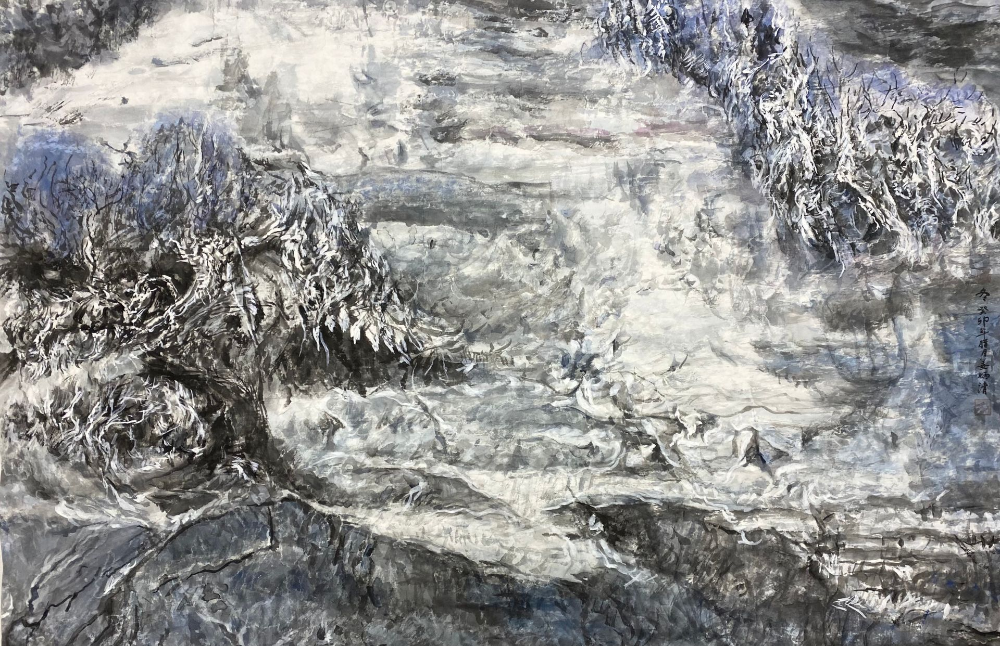
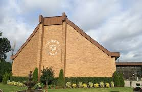

From today's featured article
Painting of the first day of the battle, with HMS Namur in the centre-left
The naval Battle of Lagos took place between a British fleet commanded by Sir Edward Boscawenand a French fleet under Jean-François de La Clue-
Sabran on 18-19 August 1759 during the Seven Years' War. The French Mediterranean fleet successfully passed through the Strait of Gibraltar, but
was sighted by a British ship. The British fleet left Gibraltar in hot pursuit and later amid great confusion, with many ships delayed
and sailing in second waves. After it was pursued, Le Courageux sank, but half of the ships failed to follow him in the dark. The British
caught the French ships in the southern part of the Gulf of Cádiz, fierce fighting ensued, and three French ships were captured. The British pursued the remaining six
French ships onward but managed to escape. The four survivors attempted to shelter in neutral Portuguese waters near Lagos, but Boscawen
caught them there, capturing two of the ships and destroying the other two. (Full article....)
Recently featured:
- Illustrated Daily News
- 2019 World Snooker Championship
- Battle of Jutland
- Archive
- By email
- More featured articles
Did you know...
Synagogue of Deal
.jpeg)
Ronnie O'Sullivan
- Ronnie O'Sullivan (pictured) wins the World
Snooker Championship, defeating Kyren
Wilson in the final. - Ugandan Joshua Cheptegei sets a new world
record on the men's 5,000 meters. - Israel and the United Arab Emirates agree to
establish diplomatic relations. - Pro-democracy protests intensify in Belarus
after the contested reelection of incumbent
President Alexander Lukashenko.
Recent deaths:
- Jasraj
- Martaja Baseer
- Robert Trump
- Linda Manz
- Julian Bream
- Luchita Hurtado
- Other recent events
- Nominate an article
On this day
August 18: Long Tan Day in Australia (1966)